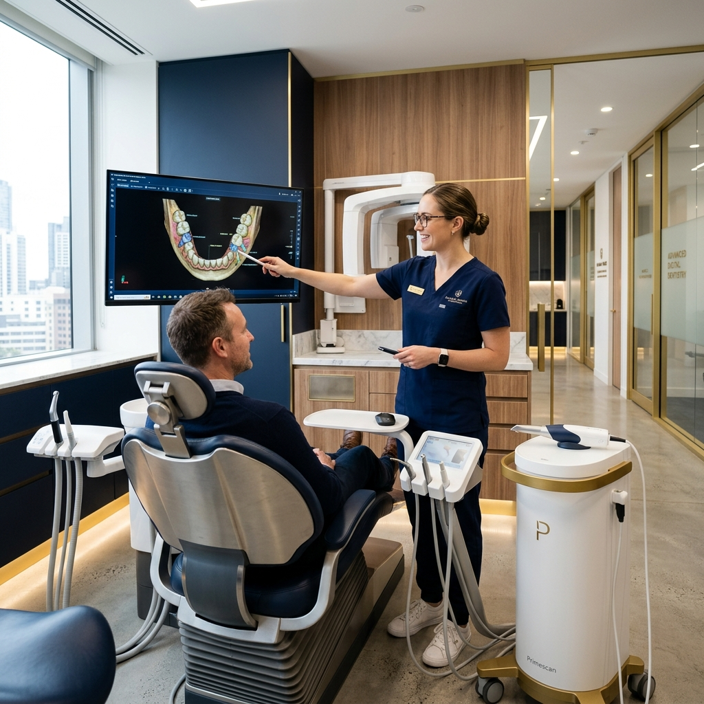

WHINISH One Day System
Whinish 원데이 시스템
빠른 게 능사가 아닙니다. 정확하고 정밀하게 제작하면서 빨라야 합니다.
이것이 Whinish 원데이 시스템이 독보적인 이유입니다.
높은 정확도의 최첨단 장비
디지털 스캐너와 밀링 머신을 통한 당일 제작
치아 제작 모형 비교
정밀도의 차이가 결과의 차이를 만듭니다.
DIGITAL IN-HOUSE LAB
정밀함의 끝, 자체 디지털 기공연구소
치과 내부에서 모든 보철물을 직접 디자인하고 제작합니다.
외부 기공소로 보내는 시간과 오차를 줄이고, 마스터 기공사가 환자의 구강 상태를 직접 확인하여 0.1mm의 오차 없는 완벽한 보철물을 완성합니다.
속도와 정확성
진단부터 보철물 제작까지 모든 과정이 원내에서 이루어져, 수정이 필요한 경우에도 현장에서 즉시 반영하여 당일 완성이 가능합니다.
환자 맞춤형 조색
기공사가 진료실에 직접 들어와 환자의 피부톤, 입술색, 기존 치아 색상을 확인하고 최적의 쉐이드(Shade)를 매칭합니다.
프리미엄 소재
인체 친화적이고 강도가 높은 글로벌 프리미엄 블록과 검증된 재료만을 사용하여 내구성과 심미성을 극대화합니다.
SAFE & CLEAN SYSTEM
30년 무사고의 약속, 철저한 멸균 시스템
환자의 안전을 최우선으로 생각합니다.
WHINISH는 대학병원 수준의 14단계 멸균 시스템을 통해 보이지 않는 곳까지 완벽하게 관리합니다.
WHINISH 14단계 안심 관리
전용 용수 살균 시스템
진료 시 사용되는 모든 물은 다단계 정수 및 살균 과정을 거쳐 박테리아와 바이러스가 없는 깨끗한 상태를 유지합니다.
고온 고압 멸균 (Autoclave)
최첨단 오토클레이브를 사용하여 모든 진료 기구를 고온 고압으로 완벽하게 멸균합니다.
1인 1기구 원칙
개별 포장된 멸균 기구는 환자분이 보시는 앞에서 바로 개봉하여 사용합니다.
일회용품 재사용 금지
글러브, 마스크, 석션 팁 등 모든 일회용 소모품은 사용 즉시 폐기하는 것을 원칙으로 합니다.
클린 메디컬의 자부심
화이트스타일치과는 국가 건강검진 기관 평가에서 구강검진 분야 최고 등급인 'S등급'을 획득하였습니다.
이 결과는 우리가 환자분들께 약속하는 청결과 안전의 지표입니다.
AUTHENTIC & GUARANTEE
평생을 함께하는 책임 진료
휘니쉬는 시술 후에도 변함없는 아름다움과 건강을 약속합니다.
정품 인증 및
10년 보증 시스템
휘니쉬의 모든 프리미엄 솔루션(임플란트, 치아 복구)은 시술 후 전용 정품 인증서(Authentic Certificate)와 보증서(Guarantee Card)를 발급해 드립니다.
철저한 사후 관리 프로그램과 최장 10년의 보증 제도를 통해, 환자분이 안심하고 아름다운 미소를 유지할 수 있도록 끝까지 책임집니다.
- ✓ 100% 정품 재료 사용 인증
- ✓ 정기적인 무상 검진 및 클리닝 서비스
- ✓ 체계적인 이력 관리 시스템
WHINISH
AUTHENTIC CERTIFICATE
LIFETIME WARRANTY
Global Standards & Local Trust
Global Medical
일본과 세계가 신뢰하는 강남의 자부심, 화이트스타일치과입니다.
일본 환자를 위한 전용 토탈 케어
언어의 장벽 없는 정밀 진료
일본어 전문 코디네이터가 상주하여 초기 상담부터 사후 관리까지 밀착 서포트합니다.
일본 환자들이 가장 어려워하는 전문 의학 용어 설명부터 예약 관리까지 일본어로 완벽하게 응대합니다.
- 🇯🇵 일본어 전문 통역 코디네이터 상주
- 📱 LINE(라인) 메신저 실시간 일본어 상담
- 📑 일본 보험 청구 서류 및 진단서 발급
- 🏥 강남역 도보 1분, 최고의 접근성

코네스트가 인정한 신뢰도
일본 최대 여행 커뮤니티 '코네스트(KONEST)'에서 수년간 높은 평점과 실제 일본 환자들의 극찬이 이어지고 있습니다.
강남에서 30년간 자리를 지켜온 전통은 전 세계 어디에서도 통하는 가장 강력한 증거입니다.
80%
일본인 환자 재방문 및 추천율
30y
강남 한 자리에서의 변치 않는 진료
1-Day
바쁜 여행객을 위한 당일 정밀 시스템
News & Highlights
일본 언론이 주목한
30년 전통의 대한민국 대표 치과
"일본인 환자 연간 방문객 30% 급증, 전용 상담 센터 확장"
강남 본점에 일본 전용 상담 센터를 대폭 확장하여 일본인 전담 코디네이터와 통역사가 상주, 일본어 대응 서비스를 대폭 강화하며 현지 매체의 큰 주목을 받았습니다.
일본인 누적 환자 2,000명 돌파, 한국 의료관광의 선두주자
정밀 교정과 당일 임플란트 치료에서 압도적인 기술력을 인정받으며, 일본인 누적 환자 2,000명을 넘어서는 기록적인 성과를 달성했습니다.
서울대학교 박사 출신 김준헌 원장, "기술과 신뢰의 집약체"
서울대 교정학 박사(PhD) 출신의 김준헌 원장은 일본 매체에서 '한국의 엘리트 의료진이 직접 집도하는 신뢰할 수 있는 병원'으로 수차례 소개되었습니다.
일본 언론 추천 '서울 5대 교정치과' 지속 선정
일본의 치과 전문 미디어 'Orthopedia' 등에서 한국 방문 시 꼭 가봐야 할 추천 치과 상위권에 지속적으로 랭크되며 글로벌 경쟁력을 입증했습니다.